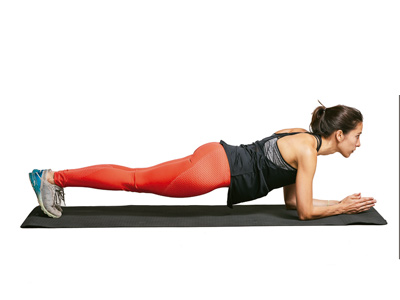

Para una espalda fuerte y ancha, estos son los ejercicios que no pueden faltar en tu rutina
2021.06.26 18:56
Webedia Trendencias Hombre Menú Nuevo Buscar Facebook Twitter TENDENCIAS CALZADO FITNESS Fitness
Para una espalda fuerte y ancha, estos son los ejercicios que no pueden faltar en tu rutina
Compartir Para una espalda fuerte y ancha, estos son los ejercicios que no pueden faltar en tu rutina
Facebook Twitter Flipboard EmailSuscríbete a Trendencias Hombre
Síguenos Twitter Facebook RSS Sin comentarios 27 mayo 2019, 13:00 Gabriela GottauEl trabajo de la espalda merece especial atención en nuestro entrenamiento, pues más allá de la estética de su fortalecimiento depende el riesgo de sufrir lesiones, nuestra postura y más. Por ello, si buscas una espalda fuerte y ancha, te mostramos los ejercicios que no pueden faltar en tu rutina .
Dominadas
Son un ejercicio muy demandante, el que todos pretendemos alcanzar y realizar a la perfección pues contribuye a un intenso trabajo de los músculos de la espalda y nos ayuda a ensanchar la misma con facilidad.
Sin embargo, las dominadas no son nada fáciles de lograr pues requieren mucha fuerza previa en los músculos de brazos y espalda para elevar todo el peso del cuerpo en barra fija.
En Trendencias Hombre Cinco buenos ejercicios para ensanchar la espaldaEntonces, podemos intentar su ejecución de forma correcta y si no lo logramos, entrenar con ejercicios que nos ayudarán a su realización .
Si por el contrario ya tenemos fuerza y entrenamiento previo y podemos realizar varias dominadas seguidas, recomendamos poner en práctica diferentes variantes de este ejercicio .
Remo horizontal con barra y otras variantes del remo
El remo horizontal con barra es un ejercicio muy completo y demandante para diferentes músculos de la espalda. Nos permite además trabajar con pesos elevados y así, desafiar la zona en cuestión para estimular su crecimiento.
Para su ejecución debemos cargar una barra y de pie, inclinar el torso hacia adelante para después realizar el gesto de remo pasando los codos por los lados del cuerpo como se puede ver en Vitónica .
En Trendencias Hombre Las mejores máquinas para trabajar la espalda en el gimnasioPero además de este remo horizontal recomendamos muchas otras variantes del remo como remo al mentón que trabaja la espalda alta, remo en polea baja , remo en barra T para cargar más peso remo horizontal con mancuernas con el que podemos trabajar ambos lados del cuerpo al mismo tiempo o bien, de forma unilateral, entre otras alternativas .
Hiperextensiones
Para trabajar la zona lumbar o la espalda baja , este es el ejercicio que no podemos dejar de realizar y se realiza en banco específico o bien, en un banco inclinado, sujetando los pies para movilizar el tronco.
Requiere de la elevación contra la gravedad, del tronco mediante la fuerza de la zona lumbar como se puede ver en su técnica de ejecución y resulta efectivo para solicitar intensamente los músculos situados en la región inferior de nuestra espalda.
Peso muerto
Es un básico que todos solemos realizar para trabajar glúteos pero que también demanda gran esfuerzo de músculos de nuestra espalda, sobre todo, de la región lumbar y dorsal .
Debemos cargar una barra y colocarnos tras esta para después inclinar el torso erguido hacia adelante y levantar la misma mediante la contracción de músculos de la parte posterior de nuestro cuerpo como nos muestran en Vitónica .
En Trendencias Hombre 11 ejercicios para entrenar tu espalda en casa, usando sólo tu cuerpoEste ejercicio requiere de una buena técnica de ejecución para que su realización sea efectiva y segura como deseamos.
Una vez lograda la práctica necesaria y la técnica correcta, podemos sumar peso y aplicar diferentes variantes del peso muerto .
Pullover
Es un ejercicio que trabaja sobre todo el dorsal ancho, por lo que contribuye a ensanchar la espalda .
Se realiza en un banco, aunque también podríamos ejecutarlo tumbados en el suelo, con una mancuerna pesada que debemos llevar hacia atrás del cuerpo y regresar a nuestro pecho, con los brazos ligeramente extendidos, para trabajar espalda y pectorales al mismo tiempo .
También se puede [realizar en polea alta](pullover en polea alta), siendo en este caso menos riesgoso y pudiendo movilizar mayor peso, por lo tanto, es una opción muy recomendable que podemos poner en práctica.
Imagen | iStock, Wikimedia Commons y Fitness Boutique
Vitónica en Instagram
Seguir
Compartir Para una espalda fuerte y ancha, estos son los ejercicios que no pueden faltar en tu rutina
Facebook Twitter Flipboard E-mail Temas Fitness musculación espalda entrenamiento ejercicios RemoCompartir
Facebook Twitter Flipboard E-mail Comentarios cerrados Temas de interés ejercicios de espalda moda hombre 2019 ejercicios abdomen dress code ejercicios triceps calorías en un kilo zapatos de moda hombre comer después de entrenar Zara Primark Mango caipiriña piña colada Inicio Chicas Lifestyle Calzado Estilo de la semana Tendencias Fitness Cosmética El mejor street-style de la semana Ideas para el Día del Padre moda hombre entrenamiento abdominalesVer más temas
Síguenos Twitter Facebook RSS E-mail Lo mejor Equipo editorial Contacta con nosotrosMás sitios que te gustarán
Xataka Applesfera Xataka Android Vitónica PoprosaExplora en nuestros medios
Tecnología Móviles, tablets, aplicaciones, videojuegos, fotografía, domótica Xataka Xataka Móvil Xataka Foto Xataka Android Xataka Smart Home Xataka Windows Xataka Ciencia Applesfera Genbeta Magnet Mundo Xiaomi Videojuegos Consolas, juegos, PC, PS4, Switch, Nintendo 3DS y Xbox 3DJuegos Vida Extra IGN Millenium Entretenimiento Series, cine, estrenos en cartelera, premios, rodajes, nuevas películas, televisión Sensacine Espinof Gastronomía Recetas, recetas de cocina fácil, pinchos, tapas, postres Directo al Paladar Estilo de vida Moda, belleza, estilo, salud, fitness, familia, gastronomía, decoración, famosos Vitónica Trendencias Trendencias Hombre Decoesfera Compradiccion Poprosa Latinoamérica Publicaciones de México Xataka México Directo al Paladar México Sensacine México 3DJuegos México Aviso legal Condiciones de uso Condiciones de uso de cookies Publicidad InicioReciente
Las prendas más destacables del desfile de Dior primavera-verano 2022 Éstas son nuestras prendas favoritas de las rebajas de Zara para sumar ya mismo a la cesta de compra Por qué el tamaño del pene no nos importa, aunque un estudio diga ahora que la media ya no es de 15 centímetros en Trendencias Los protectores solares que no pican en los ojos y resisten los deportes náuticos De rebajas en El Corte Inglés: las once piezas que necesitas sí o sí para llenar tu armario de básicos a precios únicos Vuelve ‘Sky Rojo’, se estrena ‘La calle del terror’ y mucho más: todas las series, películas y documentales de Netflix en julio de 2021 en Trendencias Louis Vuitton presenta su colección de primavera 2022 'Amen Break' debutando una nueva colaboración con Nike Ralph Lauren debuta en el mundo de los e-sports vistiendo a los miembros del G2 team Nueve zapatillas de adidas originals para aprovechar sus rebajas de hasta con un 50% Lo mejor de las rebajas de Springfield con éstas nueve piezas para veranear con estilo Rebajas en H&M: nuestra selección de las mejores piezas con descuento del momento Las camisas estampadas imponen su ley en las calles de Milán Siete piezas de JOMA que encontrarás en el Prime Day de Amazon por menos de 15 euros Últimas horas del Prime Day en Amazon: la sandwichera de Taurus para preparar los bocadillos más deliciosos por menos de 18 euros en Directo al Paladar Las grasas pueden ayudarte a perder peso: cuáles elegir para facilitar el adelgazamiento Armani, Polo Club, Hackett tus sudaderas y jerséis favoritos serán de marca premium con éstas ofertas del Prime Day de Amazon Los más bonitos relojes de Fossil, Michael Kors, Armani y más marcas top a un precio de lujo en el Prime Day de Amazon Jack & Jones, Tommy Hilfiger, BOSS y más marcas de ropa interior a precio increíble en el Prime Day de Amazon Chaquetas, cortavientos, polares y sudaderas de Helly Hansen a precios súper rebajados en el Amazon Prime Day 2021 Levi's, Dockers, Lee: las mejores ofertas en vaqueros y otros pantalones en el Prime Day de AmazonVer más artículos
Síguenos Twitter Facebook RSSEn Trendencias Hombre hablamos de
Chicas Lifestyle Calzado Estilo de la semana Tendencias Fitness Cosmética El mejor street-style de la semana Ideas para el Día del Padre moda hombre entrenamiento abdominalesVer más temas
SubirWebedia
Tecnología
Xataka Xataka Móvil Xataka Foto Xataka Android Xataka Smart Home Xataka Windows Xataka Ciencia Applesfera Genbeta Magnet Mundo XiaomiVideojuegos
3DJuegos Vida Extra IGN MilleniumEntretenimiento
Sensacine EspinofGastronomía
Directo al PaladarEstilo de vida
Vitónica Trendencias Trendencias Hombre Decoesfera Compradiccion PoprosaLatinoamérica
Xataka México 3DJuegos México Sensacine México Directo al Paladar México Webedia Xataka Vida Extra Espinof Genbeta Directo al Paladar Xataka Ciencia Trendencias Applesfera Xataka Móvil Decoesfera Vitónica Xataka Foto Trendencias Hombre Xataka Android Xataka Smart Home Xataka Windows Magnet Compradiccion 3DJuegos Sensacine IGN Millenium Poprosa Mundo XiaomiTecnología
Xataka Xataka Móvil Xataka Foto Xataka Android Xataka Smart Home Xataka Windows Xataka Ciencia Applesfera Genbeta Magnet Mundo XiaomiVideojuegos
3DJuegos Vida Extra IGN MilleniumEntretenimiento
Sensacine EspinofGastronomía
Directo al PaladarEstilo de vida
Vitónica Trendencias Trendencias Hombre Decoesfera Compradiccion Poprosa